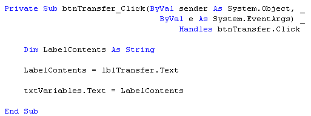
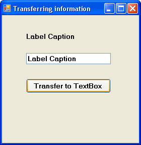

Using Variables in your VB NET Code
In this next section, we're going to learn how to transfer the contents of one textbox to another textbox. We'll also learn to transfer the text from a label to a textbox, and whatever was in the textbox we'll transfer it to a label. This will get us a little more practise with variables, and how to use them.
Ok, start a new Visual basic project. You should know how to do this by now, and what the design environment looks like. But you should have a plain grey Form on your screen. By default it will be called Form1.
Make sure the Form is selected (has it got the white squares around it?), and the click the Name property in the Properties window. Change the Name of the form to frmVariables.
Set the Text property of the Form to "Transferring information". You can choose any background colour you like for the form, or leave it on the default.
Put the following controls on the Form, and change their properties to the one's specified below (NOTE: lbl is short for label):
Textbox
Name: txtVariables
Font: MS Sans Serif, Bold, 10
Text Delete the default text "Text1" and leave it blank
Label
Name: lblTransfer
BackColor: A colour of your choice
Text: Label Caption
Font: MS Sans Serif, Bold, 10
Button
Name: btnTransfer
Text: Transfer
The height of your controls is entirely up to you.
If you double click your Button to bring up the code window, you will see that the first line of the code no longer says Button1_Click (etc). The first line should say this
Private Sub btnTransfer_Click (ByVal sender
As System.Object, _
ByVal e As System.EventArgs) _
Handles btnTransfer.Click
End Sub
The reason it has changed is because you changed the Name property of the Button. The button now has the Name btnTransfer. If you wanted to, you could change the Name property back to Button1. Then when you double clicked the button, the code window would pop up and the first line would be Button1_Click(etc ).
What we're going to do now is to transfer the Text on the label ("Label Caption") to our empty textbox. And all with the click of a button.
As you'll see, there isn't much code.
Type the following into your code window:
Dim LabelContents As String
LabelContents = lblTransfer.Text
txtVariables.Text = LabelContents
Your code window should now look something like this:

Now Run your programme and test it out. When you click on the "Transfer" button, you should see that the contents of the label will be inserted into the textbox:

But let's break the code down and see what's going on.
No more reading these lessons online - get the eBook here!
- Dim LabelContents As String
- Here is where we set up a variable called LabelContents. Because it will be holding text, we've used the variable type As String.
- LabelContents = lblTransfer.Text
- Here is where we put something into our empty variable. We changed the Name property of our Label from the default Label1 to lblTransfer. A Label has lots of properties you can manipulate. One of those properties is the Text property. After you typed the word "lblTransfer" and then typed a full stop, you probably saw a drop down box appear. Inside the box is a list of all the properties and Methods that a Label has. We wanted to manipulate the Text property of our label so we selected the word Text after the full stop. So we were saying "Access the value of the Text property of the label called lblTransfer, and put this value into the variable called LabelContents." Because our Text was ""Label Caption", the variable LabelContents now holds the text "Label Caption."
- txtVariables.Text = LabelContents
- Finally, we want to transfer whatever is in the variable LabelContents to the Textbox. Our Textbox is called txtVariables. Again, after typing the full stop the drop down box would appear, showing you a list of all the properties that a Textbox has. The one we're interested in is the Text Property. So we're saying, "Take whatever text is in the variable LabelContents, and transfer it to the Text property of the Textbox called txtVariables.
And with three lines of code we can transfer text from a label to a Textbox. But can we do it the other way round? Can we transfer whatever is in a Textbox to a Label? Well, sure we can.
Add another button to your form. Change its Name property from Button1 to cmdTransferToLabel, and change the Caption property to "Transfer To Label". Again, there's just three lines of code.
So double click your new button to bring up the code window. Then type in the following code:
Dim TextBoxContents As String
TextBoxContents = txtVariables.Text
lblTransfer.Text = TextBoxContents
Now, see if you can work out how it works. It's the same thing as the first three lines of code: set up a variable, transfer the Text property of the Textbox to the variable, transfer the variable to the Text property of the Label. Run your programme and test it out. Type something into the Textbox, and then click the "Transfer To Label" button.
Exercise E
A button also has a Text Property. Write code to transfer the Text property of a button to the Textbox. It's probably better for this exercise to create a new Button. Set its Name property to whatever you like. And give its Text Property a new value (The Text property will be Button1 by default) .
But the process is exactly the same as the two bits of code above - you should only need 3 lines of code for this exercise.
- Set up a Variable
- Transfer the Text property of the button to the variable
- Transfer the variable to the Textbox
In the next part, we'll start a Calculator project. This will get you some more practical experience of working with variables.